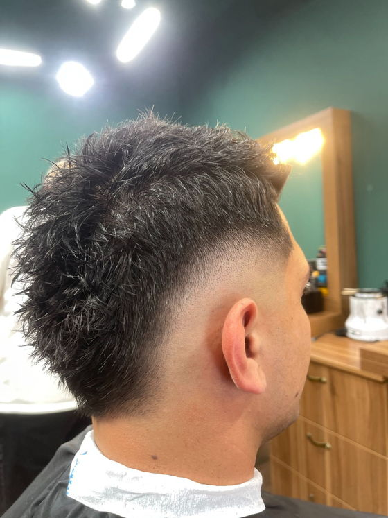
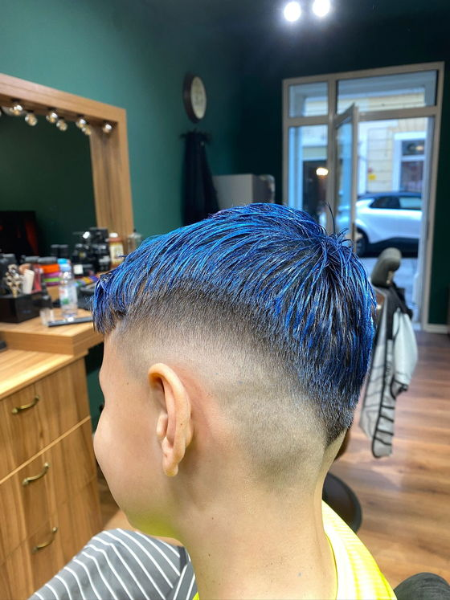
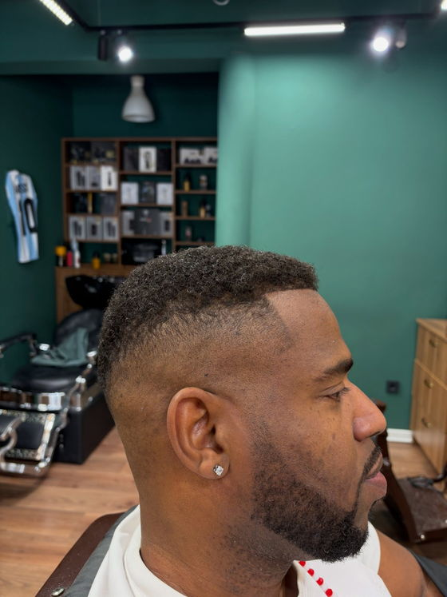
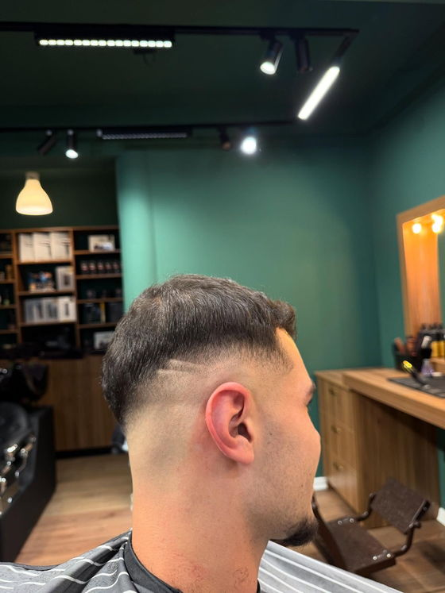

Barbershop · Poreč
Bez naručivanja. Samo uđi.
Barber 33 je walk-in barbershop u Poreču. Nema kalendara ni termina — radimo po redu dolaska. Dođeš, sjedneš, izađeš ošišan.
Radno vrijeme
Barber 33 je walk-in barbershop u Poreču. Nema kalendara ni termina — radimo po redu dolaska. Dođeš, sjedneš, izađeš ošišan.
Radno vrijeme
Sustavi za naručivanje odgovaraju salonu koji radi na termine. Ovaj radi na onoga tko uđe kroz vrata.
Bez naručivanja i bez instaliranja ičega. Provjeri radno vrijeme, uđi i javi se. Po redu dolaska — uvijek.
Ako su stolci puni, reci nam što trebaš i sjedni. Reći ćemo ti otprilike koliko se čeka prije nego što odlučiš ostati.
Većina šišanja traje tridesetak minuta. Karticom ili gotovinom, kako ti je lakše.
Bez doplate za fade, pranje ili stiliziranje, a linija brade i vrat idu uz šišanje, a ne posebno.
Gotovina i kartice. Vrijeme uz uslugu je koliko je stolac tvoj, a ne koliko se čeka.
Od uredne klasike do skin fadea. Reci broj ili pokaži sliku — oboje radi.
Brijanje i oblikovanje brade po starinski: vrući ručnik, prava pjena i balzam poslije.
Linija brade, vrat i zalisci dio su šišanja — ne naplaćuju se posebno.
Objasni kako god ti je lakše. Razumjet ćemo se.




| Dan | Otvoreno |
|---|---|
| Ponedjeljak | 09:00 – 20:00 |
| Utorak | 09:00 – 20:00 |
| Srijeda | 09:00 – 20:00 |
| Četvrtak | 09:00 – 20:00 |
| Petak | 09:00 – 20:00 |
| Subota | 08:00 – 14:00 |
| Nedjelja | Zatvoreno |
Najmirnije je radnim danom prije podne. Petak poslijepodne i subota ujutro su najgušći — tada računaj na čekanje.
Zadnje šišanje počinje pola sata prije zatvaranja.
Barber 33
ulica i kućni broj
52440 Poreč, Hrvatska